Règle-phare Smartlynx — dispositif de contrôle du réglage des feux de croisement
Le règle-phare Smartlynx est l'appareil de mesure utilisé dans les centres de contrôle technique pour vérifier le réglage des feux de croisement. Sa mise en service, son installation et sa maintenance sont encadrées par deux textes réglementaires : le CDC-3 et le SRV 042.
📋
Références réglementaires
CDC-3A — Contrôle des feux des véhicules · SRV 042 rev. C (29/06/2017) · INS-C-02 V3 — Installation et vérification des règles-phares des CCT
Enjeux de sécurité
Les feux servent à voir et à être vu dans toutes les circonstances de jour comme de nuit. Un phare mal réglé peut entraîner :
Un manque de visibilité et une réaction tardive du conducteur
L'éblouissement des conducteurs venant en sens inverse — situation dangereuse
Un écart ou évitement de dernière seconde
Des conséquences graves en matière de sécurité routière
Objectifs de la formation
1
Comprendre la réglementation
CDC-3 et SRV 042 : exigences de réglage, plages d'acceptation, polygone asymétrique.
2
Maîtriser la méthode de mesure
Formule de rabattement, préparation du véhicule, plages d'acceptation par hauteur.
3
Installer le Smartlynx
Montage, zone de déplacement, zone véhicule, marquage, contrôle altimétrique.
4
Calibrer et maintenir
Ajustage initial, vérifications semestrielles, dépannage des pannes courantes.
Il existe plusieurs technologies de feux dont le réglage est important. Chaque technologie présente une portée différente et des caractéristiques optiques spécifiques.
Les 4 grandes technologies
Halogène
≥ 100 m
Ampoule à filament de tungstène — technologie traditionnelle
Xénon (HID)
≈ 220 m
Arc électrique à gaz xenon — lumière blanche intense
LED
≈ 300 m
Diodes électroluminescentes — faible consommation
Laser
≈ 600 m
Diodes laser — technologie haute performance
⚠️
Types de feux concernés par le réglage
Les feux de position (veilleuses), les feux de croisement, les feux de route et les feux de brouillard. Le contrôle porte principalement sur les feux de croisement.
Polygone asymétrique — image du faisceau
Pour être correct, l'image de chaque faisceau doit représenter un polygone asymétrique à 5 côtés respectant les caractéristiques suivantes :
Polygone asymétrique à 5 côtés — caractéristiques de la ligne de coupure
L'oblique supérieure du polygone ne dépasse pas la ligne horizontale passant par le point A
La ligne horizontale inférieure du polygone ne dépasse pas la ligne horizontale passant par le point B
Le point central de chaque faisceau correspond aux points C₁ (projecteur gauche) et C₂ (projecteur droit)
Schéma — vue du panneau de lecture
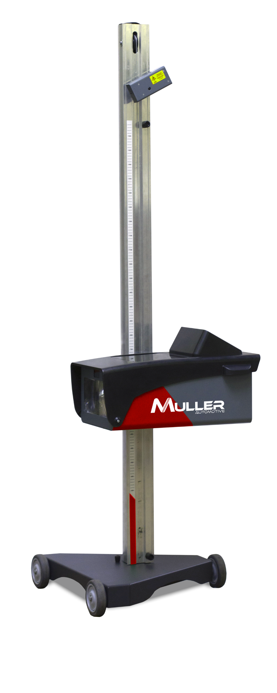
Vue du panneau de lecture du règle-phare Smartlynx — ligne de coupure et repères de mesure
Chapitre 03 — Méthode de mesure
Méthode de mesure
Préparation du véhicule
Contrôler la pression des pneus
Véhicule à vide (sans chargement supplémentaire)
Surface au sol bien plane
Dispositif de correction manuelle d'assiette réglé à 0 (position standard)
Moteur en marche pour éviter la décharge de batterie
Méthode de substitution
Placez le véhicule sur un sol plat, perpendiculairement face à un mur, à une distance de 5 mètres ou 10 mètres afin de faciliter les calculs.
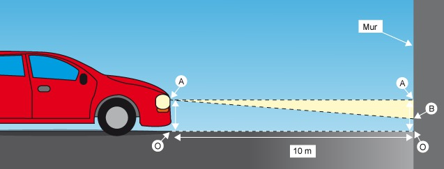
Positionnement du véhicule — méthode de substitution à 5m ou 10m du mur
Mesures à réaliser
1
Mesurer OB
Hauteur par rapport au sol, en mètres, de la partie horizontale de la ligne de coupure projetée sur le mur.
2
Mesurer OA
Hauteur par rapport au sol, en mètres, de l'axe optique du feu (partie inférieure du réflecteur).
3
Mesurer L
Distance en millimètres entre le mur et le centre de la glace de l'optique.
4
Calculer le rabattement
Appliquer la formule ci-dessous.
Formule de calcul
Rabattement = [ ( OB − OA ) / L ] × 100
OB = hauteur de la ligne de coupure au mur (m) |
OA = hauteur de l'axe optique (m) |
L = distance au mur (mm)
Résultat en % — valeur négative = faisceau rabattu vers le bas (normal)
ℹ️
Hauteur de l'axe optique
La hauteur OA correspond à la hauteur de la partie inférieure du réflecteur par rapport au sol. Selon la hauteur du phare, la tolérance est légèrement différente.
Plages d'acceptation — Rabattement de la ligne de coupure
Hauteur OA (axe optique)
Rabattement minimum
Rabattement maximum
Inférieure à 0,8 m (exclue)
- 0,5 %
- 2,5 %
Entre 0,8 m (inclus) et 1,0 m (inclus)
- 0,5 %
- 3,0 %
Entre 1,0 m (exclus) et 1,2 m (inclus)
- 1,0 %
- 3,0 %
🔴
Attention — Sens des valeurs
Les valeurs de rabattement sont négatives (ex. -1,5%). Un faisceau réglé trop bas = valeur trop négative. Un faisceau trop haut = valeur proche de 0 ou positive → risque d'éblouissement.
Chapitre 04 — Exercice interactif
Exercice calcul de rabattement
Appliquez la formule de rabattement avec les données réelles d'un véhicule. Calculez et déterminez si le réglage est conforme à la réglementation.
Données de l'exercice
OA — Hauteur axe optique
82 cm
0,82 m du sol
OB — Hauteur feu au mur
52 cm
0,52 m du sol
L — Distance au mur
5 000 mm
véhicule à 5 m
Étape 1 — Calculer le rabattement
?
Appliquez la formule : [ (OB − OA) / L ] × 100
Soit : [ (0,52 − 0,82) / 5 ] × 100 = ?
❌ Recalculez : OB − OA = 0,52 − 0,82 = −0,30 m. Divisé par L = 5 m, multiplié par 100 = −6,0 %
Étape 2 — Conformité réglementaire
OA = 0,82 m → plage 0,8 m à 1,0 m : acceptable entre −0,5% et −3,0%. La valeur calculée est-elle conforme ?
✅ Oui, conforme
❌ Non, hors tolérance
✅ Correct ! −6,0% est HORS de la plage admise [−0,5% ; −3,0%] pour un phare à 0,82 m. Le véhicule est non-conforme : le phare pointe trop bas.
❌ Non ! Pour OA = 0,82 m (entre 0,8 m et 1,0 m), la plage est [−0,5% ; −3,0%]. −6,0% est HORS tolérance → non-conforme.
💡
Rappel des plages
OA < 0,8 m : entre −0,5% et −2,5% | OA 0,8–1,0 m : entre −0,5% et −3,0% | OA 1,0–1,2 m : entre −1,0% et −3,0%
Chapitre 05 — Qualification
Qualification des intervenants
Trois niveaux de qualification sont exigés par le SRV 042 avant toute intervention sur un règle-phare en centre de contrôle technique.
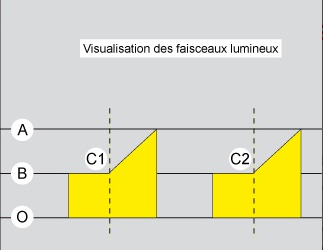
Qualification — Titre remis au technicien à l'issue de la formation
1 — Qualification des techniciens
🎓
Formation obligatoire
Les techniciens réalisant les opérations d'installation, d'étalonnage et de maintenance doivent être formés. La formation est sanctionnée par un titre de qualification remis au technicien à l'issue de la formation. Lors de chaque intervention, le technicien doit être en mesure de présenter son titre de qualification au représentant de l'installation ou de l'administration.
2 — Qualification des méthodes
📋
Modes opératoires Muller Automotive
Les techniciens doivent appliquer les méthodes définies par Muller Automotive et décrites dans les modes opératoires pour le matériel concerné. Document de référence : INS-C-02
3 — Qualification des moyens
Les techniciens doivent réaliser les vérifications en utilisant exclusivement les étalons définis et vérifiés par le laboratoire métrologique de Muller Automotive.
Étalon 1
Étalon règle-phares
Avec projecteur étalon feu de croisement
Étalon 2
Inclinomètre
Vérifié métrологiquement
Étalon 3
Mètre à ruban
Pour mesures altimétriques
Moyen compl.
Laser
Pour alignement et marquage
⚠️
Identification obligatoire des étalons
Tous les étalons doivent être identifiés et marqués avec une étiquette indiquant la date de fin de validité, et accompagnés de leur constat de vérification.
Chapitre 06 — Installation
Installation Montage Smartlynx
L'installation du règle-phare Smartlynx suit un protocole précis défini dans l'INS-C-02. Les étapes doivent être réalisées dans l'ordre indiqué.
Étapes d'installation
1
Montage du règle-phares
Se reporter à la notice du règle-phares (voir ci-dessous).
2
Identification zone de déplacement
Contrôle de planéité et marquage de la zone de déplacement du règle-phares.
3
Identification zone de positionnement véhicule
Contrôle altimétrique et marquage des points de la zone véhicule.
4
Marquage du point de référence
Marquage du point de référence règle-phares (intersection lignes de référence et ligne A).
5
Ajustage initial
Calibrage du bloc optique par rapport à la pente moyenne de la zone véhicule.
Procédure de montage détaillée
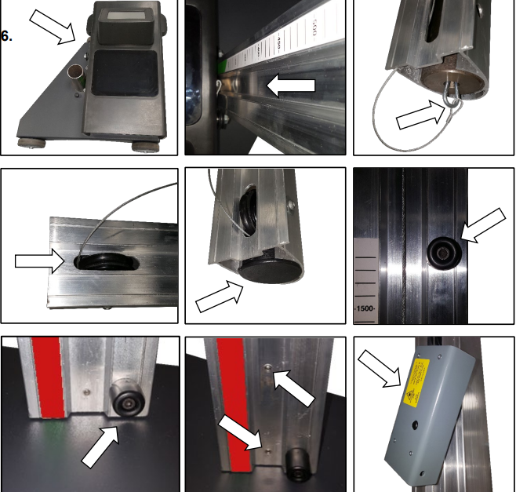
Montage roues et embase — excentrique en partie arrière
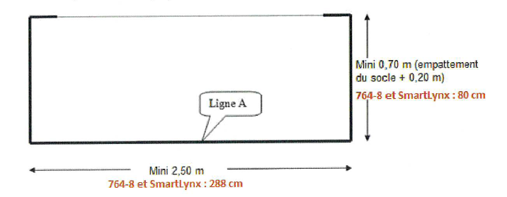
Montage colonne — positionnement galets de guidage
Monter les roues sur l'embase (excentrique en partie arrière)
Positionner le sticker sur la colonne — appliquer la différence de hauteur si nivellement différent entre zones
Positionner le bloc optique sur l'embase
Descendre la colonne dans le tube de l'embase en veillant au positionnement des galets de guidage
Coucher la colonne au sol
Insérer le contre-poids dans la colonne et attacher le câble métallique
Monter la poulie, puis le capuchon
Fixer la butée caoutchouc haute et la butée caoutchouc basse
Serrer modérément les vis de réglage de dureté
Fixer le module d'alignement laser et procéder à son réglage
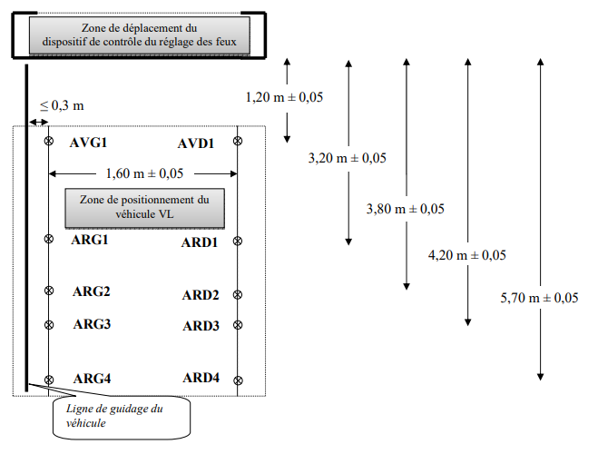
Vue d'ensemble — règle-phare Smartlynx monté et prêt pour le réglage de zone
Chapitre 07 — Installation
Zone de déplacement & zone véhicule
Zone de déplacement du règle-phares
La zone de déplacement est identifiée au sol par des traits pleins. Son contrôle de planéité dépend de l'équipement.
Sans rail et sans inclinomètre
18 points de mesure — voir SRV042
Avec rail et sans inclinomètre
6 points de mesure — voir SRV042
Avec inclinomètre (Smartlynx)
Zone non qualifiée — non obligatoire
✅
Tolérance de planéité
La tolérance de planéité de la zone de déplacement du dispositif de contrôle est de +/− 0,2 %.
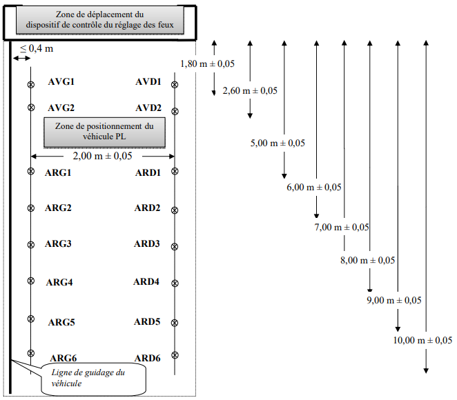
Zone de déplacement — marquage sol, ligne A et points de référence
Zone de positionnement — Véhicule VL
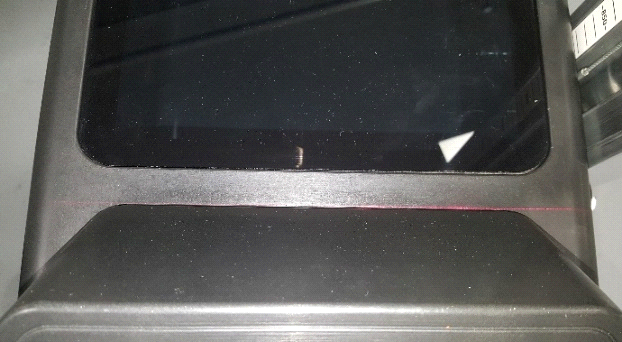
Zone de positionnement du véhicule VL — points AVGx, ARGx, AVDx, ARDx et ligne de guidage
Vérification périodique (sol)
Tous les 5 ans
Vérification périodique (pont élévateur)
Tous les 3 ans
Implantation sur pont élévateur
Possible si tous les points matérialisés sur le pont et rampes sans obstacle
Zone de positionnement — Véhicule PL
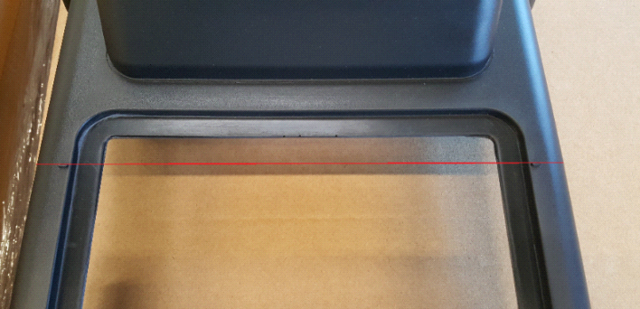
Zone de positionnement du véhicule PL — vérification tous les 3 ans, utiliser DOC-C15-V6 pour calcul de pente
⚠️
Véhicules hors gabarit
Si le centre ne permet pas de réaliser tous les points, il devra refuser les véhicules dont l'empattement et/ou la longueur excède(nt) la capacité de la zone.
Contrôle altimétrique des points de référence
Le contrôle altimétrique permet de calculer la pente moyenne, utilisée pour le réglage de l'inclinaison du bloc optique.
1
Tracer les points de référence
Tracer provisoirement AVG, ARG, AVD, ARD avant marquage définitif.
2
Prendre les mesures
Mètre à ruban sur semelle carrée 15×15 cm, centrée sur chaque point. Laser réglé à l'horizontale, visible sur la pige.
3
Renseigner DOC-C-15
Document Excel pour vérifier la conformité et obtenir les valeurs de pente gauche, droite et moyenne.
4
Marquer définitivement
Si conforme : chevilles indémontables avec vis serrées. Enregistrer les pentes dans le carnet métrologique.
📐
Tolérance altimétrique
Écart maximal toléré entre les points de référence et la droite de régression linéaire : +/− 7 mm jusqu'à 3 m à partir de AVG1 ou AVD1. Au-delà : +/− 12 mm.
Matérialisation des points de référence
Les points de référence sont constitués idéalement par des chevilles indémontables après blocage avec une vis montée. Il faut respecter les dimensions mentionnées à +/− 5 cm.
Ligne de guidage VL
0 à 30 cm
Côté gauche de la bande de roulement gauche
Ligne de guidage PL
0 à 40 cm
Côté gauche de la bande de roulement gauche
Côté de référence
Gauche
Pour reproductibilité des mesures entre techniciens
Chapitre 08 — Calibrage initial
Calibrage initial
À la mise en service, le bloc optique du règle-phares doit être calibré par rapport à l'inclinaison moyenne de la zone véhicule. Cette opération est fondamentale pour la fiabilité des mesures.
Ajustage du bloc optique
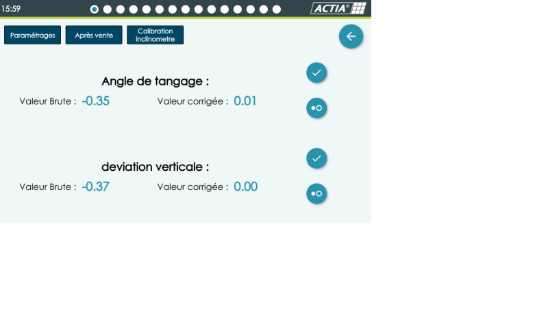
Ajustage initial — positionnement étalon règle-phares à 400 mm de la lentille
1
Centrer le règle-phares
Centrer au point de référence de la zone règle-phares.
2
Positionner la lentille
Placer le centre de la lentille de l'appareil à une hauteur de 800 mm du sol.
3
Positionner l'étalon
Placer l'étalon sur trépied, à 400 mm de la lentille du règle-phares.
4
Aligner l'étalon
Aligner l'étalon avec le règle-phares à l'aide du miroir ou du laser.
5
Allumer le laser ligne
Allumer le laser ligne de l'étalon. Régler la hauteur pour que le laser passe par le centre de la lentille.
6
Régler le dévers
Régler le dévers de l'étalon pour que le trait laser passe par les mêmes graduations du panneau de lecture.
Réglage de l'inclinomètre
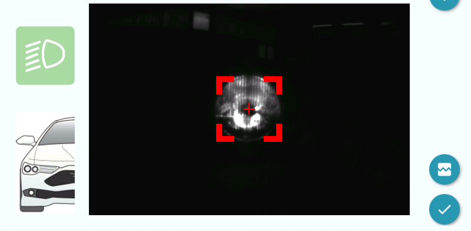
Réglage inclinomètre étalon — pied arrière, bulle à 0%, puis inclinaison = pente moyenne zone véhicule
1
Régler le niveau à bulle à 0%
Le réglage s'effectue avec le pied arrière de l'étalon.
2
Placer l'inclinomètre étalon
Placer l'inclinomètre étalon sur la platine à côté du niveau à bulle « 0% ».
3
Effectuer le zéro
Appuyer sur la touche « Zéro » (plusieurs fois si nécessaire).
4
Régler l'inclinaison
Régler avec la vis arrière jusqu'à lire la valeur de pente moyenne calculée sur DOC-C-15.
📐
Sens de l'inclinomètre
Bulle à gauche : étalon RPH avec rabattement (−) pour une pente (+) sur DOC-C-15
Bulle à droite : étalon RPH avec rabattement (+) pour une pente (−) sur DOC-C-15
Contrôle du rabattement avec projecteur étalon
1
Allumer le feu de croisement
Sans modifier les réglages du projecteur étalon après le calibrage du bloc optique.
2
Relever la valeur à 0%
Passer en mode mesure et relever. La valeur doit être entre +0,2% et −0,2%. Enregistrer dans le carnet métrologique.
3
Test à −1% d'inclinaison
Monter l'arrière de l'étalon pour générer −1% d'inclinaison. La valeur lue doit être entre −0,8% et −1,2%.
4
Réaliser l'alignement laser
Aligner le laser selon la procédure capot 1ère ou 2ème génération.
⚠️
Réglage avec les pieds avant
Le réglage initial du bloc optique s'effectue avec les pieds avant de l'étalon — pas les pieds arrière qui servent au réglage de l'inclinomètre.
Chapitre 09 — Maintenance
Maintenance & vérifications semestrielles
La vérification semestrielle est obligatoire pour maintenir la conformité métrologique du règle-phares. Elle couvre les aspects mécaniques, optiques et électroniques.
Checklist de vérification semestrielle
Vérifier la version de programme
Vérifier le bon déplacement du règle-phares — jeu des roulettes
Vérifier l'état des lentilles : propreté, fissures, rayures
Vérifier le déplacement du bloc optique, jeux des roulettes de guidage et leurs bonnes rotations
Vérifier le jeu de colonne avec l'inclinomètre sur différentes hauteurs de bas en haut — la valeur ne doit pas varier de +/− 0,15%
Vérifier le calibrage du bloc optique
Vérifier la valeur de rabattement à 0 et −1% — tolérance +/− 0,2%
Vérifier la calibration de l'inclinomètre du règle-phares
Vérifier l'aide au positionnement
Vérifier l'alignement laser
Renseigner la date de maintenance
Renseigner le carnet métrologique, liste étalons, habilitation technicien
Vérification de la calibration de l'inclinomètre
1
Positionner le règle-phares
Placer le règle-phares sur son point de référence.
2
Régler la hauteur
Placer le centre de la lentille du règle-phare à une hauteur de 800 mm du sol.
3
Vérifier dans le menu
Dans le menu calibration inclinomètre : vérifier le 0 de l'angle de tangage et de la déviation verticale.
Vérification de l'aide au positionnement
Positionner l'étalon règle-phares à 50 cm de la lentille. Vérifier que le maximum de lumière est centré sur la lentille, lorsque la zone éclairée du feu étalon est encadrée par les repères visuels rouges et centrée sur la croix rouge.
Vérification de l'alignement laser
1️⃣
Capot 1ère génération
Allumer le laser et le pivoter pour faire coïncider le trait laser avec la ligne en renfoncement (marque de moulage) à l'arrière du capot
2️⃣
Capot 2ème génération
Même procédure : faire coïncider le trait laser avec la ligne en renfoncement (marque de moulage) à l'arrière du capot de visualisation
🔧
En cas d'écart lors du jeu de colonne
Si la valeur varie de plus de +/− 0,15% sur différentes hauteurs : régler l'excentrique, vérifier la poulie, le câble et le contre-poids.
Chapitre 10 — Dépannage
Cas de pannes
Inventaire des problèmes courants rencontrés sur le Smartlynx et leurs solutions. En cas de doute, contacter le support technique Muller Automotive.
Pannes connues et solutions
⚠️ Figeage des mesures (version BSP 16.1.0)
Les mesures se figent et ne se mettent plus à jour pendant l'utilisation.
Solution : Mise à jour de la carte CPU (version BSP 16.1.2) ou remplacement par nouveau modèle (version BSP 20.1.0)
⏰ Décalage d'horaires (heure de début/fin de contrôle)
Si décalage d'1 heure : réglage du fuseau horaire incorrect. Si décalage de secondes ou minutes : problème de perte de Wifi. Les premiers modèles n'avaient pas d'antenne Wifi.
Solution décalage heure : corriger le fuseau horaire dans les paramètres système.
Solution perte Wifi : améliorer le signal, rapprocher la borne Wifi, ou installer une antenne externe.
📷 Problème visuel caméra — trait qui défile ou image instable
Par forte chaleur, les connectiques de la caméra ont tendance à bouger et créer des artefacts visuels.
Solution : Contrôler les connectiques caméra — les reconnecter fermement
🔋 Batterie indique pleine et vide en alternance
Indication erratique du niveau de charge de la batterie pendant l'utilisation.
Solution :
1. Contrôler la connectique de charge sur le bloc
2. Contrôler le bloc alimentation
3. Contrôler la batterie elle-même
4. En dernier recours : remplacement de la carte CPU
📞
Support technique
Pour tout problème non listé ici, contacter le support technique Muller Automotive avec : numéro de série de l'appareil, version du logiciel (BSP), description détaillée du problème et contexte d'apparition.
Chapitre 11 — Mémorisation
Flashcards
Cliquez sur chaque carte pour révéler la réponse. Idéal pour mémoriser les valeurs clés avant l'examen.
Que représente OB dans la formule de rabattement ?
Cliquez pour la réponse
Hauteur de la ligne de coupure
Hauteur par rapport au sol de la partie horizontale de la ligne de coupure, mesurée sur le mur
Que représente OA dans la formule de rabattement ?
Cliquez pour la réponse
Hauteur de l'axe optique
Hauteur de la partie inférieure du réflecteur par rapport au sol
Plage de rabattement pour OA < 0,8 m ?
Cliquez pour la réponse
−0,5 % à −2,5 %
Phares de faible hauteur — tolérance réduite côté bas
Plage de rabattement pour OA entre 0,8 m et 1,0 m ?
Cliquez pour la réponse
−0,5 % à −3,0 %
Plage la plus courante — véhicules VL standards
Plage de rabattement pour OA entre 1,0 m et 1,2 m ?
Cliquez pour la réponse
−1,0 % à −3,0 %
Phares hauts (SUV, camions légers) — décalage du minimum
Tolérance de planéité de la zone de déplacement ?
Cliquez pour la réponse
+/− 0,2 %
Exigence SRV 042 — s'applique aux installations sans inclinomètre
Hauteur lentille lors du calibrage initial ?
Cliquez pour la réponse
800 mm du sol
Distance étalon règle-phares : 400 mm de la lentille
Fréquence de vérification zone VL sur sol vs pont ?
Cliquez pour la réponse
Sol : 5 ans / Pont : 3 ans
Zone PL : tous les 3 ans dans les deux cas
Chapitre 12 — Évaluation
QCM Final
Question 1 / 10
Question 01
La formule de calcul du rabattement de la ligne de coupure est :
A[ (OA − OB) / L ] × 100
B[ (OB − OA) / L ] × 100
C(OA × OB) / L
D[ (OA + OB) / 2L ] × 100
✅ Correct ! OB − OA donne une valeur négative lorsque le faisceau est rabattu vers le bas, divisée par L et multipliée par 100 pour obtenir le pourcentage.
❌ La bonne formule est B : [(OB − OA) / L] × 100. OB est la hauteur du feu mesuré au mur, OA la hauteur de l'axe optique.
Question 02
Pour un phare dont l'axe optique OA est à 0,9 m du sol, la plage de rabattement acceptable est :
AEntre −0,5 % et −2,5 %
BEntre −0,5 % et −3,0 %
CEntre −1,0 % et −3,0 %
DEntre −0,5 % et −1,5 %
✅ Correct ! Pour 0,8 m ≤ OA ≤ 1,0 m, la plage est −0,5 % à −3,0 %.
❌ Pour OA entre 0,8 m et 1,0 m inclus, la plage est B : −0,5 % à −3,0 %.
Question 03
La tolérance de planéité de la zone de déplacement du règle-phares est de :
A+/− 0,1 %
B+/− 0,2 %
C+/− 0,5 %
D+/− 1,0 %
✅ Correct ! La tolérance SRV 042 est de +/− 0,2 %.
❌ La tolérance de planéité est B : +/− 0,2 %, selon SRV 042.
Question 04
Sans rail et sans inclinomètre, combien de points de mesure sont nécessaires pour le contrôle de planéité ?
A6 points
B12 points
C18 points
D24 points
✅ Correct ! Sans rail ni inclinomètre : 18 points. Avec rail sans inclinomètre : 6 points.
❌ Sans rail et sans inclinomètre : 18 points. Avec rail sans inclinomètre : 6 points seulement.
Question 05
Pour le Smartlynx équipé d'un inclinomètre, la zone de déplacement du règle-phares est :
AVérifiée avec 6 points de mesure
BVérifiée avec 18 points de mesure
CNon qualifiée — zone non obligatoire
DVérifiée par contrôle laser uniquement
✅ Exact ! Avec inclinomètre (Smartlynx), la zone de déplacement n'est pas qualifiée — le dispositif de correction angulaire compense les irrégularités.
❌ Avec inclinomètre : zone NON qualifiée. Le Smartlynx corrige automatiquement les irrégularités grâce à son inclinomètre intégré.
Question 06
À quelle hauteur faut-il positionner la lentille du règle-phares lors du calibrage initial ?
A600 mm
B800 mm
C1 000 mm
D1 200 mm
✅ Correct ! La lentille doit être placée à 800 mm du sol. L'étalon est positionné à 400 mm de la lentille.
❌ La hauteur correcte est B : 800 mm du sol. L'étalon se positionne ensuite à 400 mm de la lentille.
Question 07
Lors du contrôle avec projecteur étalon à l'inclinaison 0%, la valeur lue sur le règle-phares doit être :
AEntre +0,5 % et −0,5 %
BEntre +0,2 % et −0,2 %
CExactement 0 %
DEntre 0 % et −0,2 %
✅ Correct ! La tolérance à 0% est de +/− 0,2 %, soit entre +0,2% et −0,2%.
❌ La tolérance correcte est B : entre +0,2% et −0,2%. À −1% d'inclinaison, la valeur doit être entre −0,8% et −1,2%.
Question 08
Lors d'une vérification semestrielle, le jeu de colonne mesuré à différentes hauteurs ne doit pas varier de plus de :
A+/− 0,05 %
B+/− 0,10 %
C+/− 0,15 %
D+/− 0,30 %
✅ Correct ! La tolérance du jeu de colonne est de +/− 0,15 % mesurée de bas en haut.
❌ La tolérance correcte est C : +/− 0,15 % sur l'ensemble de la course verticale.
Question 09
À quelle fréquence doit-on vérifier la zone de positionnement du véhicule VL implantée au sol ?
ATous les 2 ans
BTous les 3 ans
CTous les 5 ans
DTous les 10 ans
✅ Exact ! Zone VL sur sol : tous les 5 ans. Sur pont élévateur : tous les 3 ans. Zone PL : tous les 3 ans.
❌ Zone VL sur sol : tous les 5 ans (C). Sur pont élévateur : tous les 3 ans.
Question 10
En cas de figeage des mesures sur un Smartlynx version BSP 16.1.0, quelle est la solution recommandée ?
ARedémarrer le Smartlynx et recalibrer l'inclinomètre
BVérifier la connexion Wifi et rapprocher la borne
CMise à jour ou remplacement de la carte CPU
DNettoyer les lentilles et recalibrer le bloc optique
✅ Correct ! Pour le figeage BSP 16.1.0 : mettre à jour en 16.1.2, ou remplacer la carte CPU par le nouveau modèle (BSP 20.1.0).
❌ La solution correcte est C : mise à jour de la carte CPU en version BSP 16.1.2 ou remplacement par le nouveau modèle BSP 20.1.0.